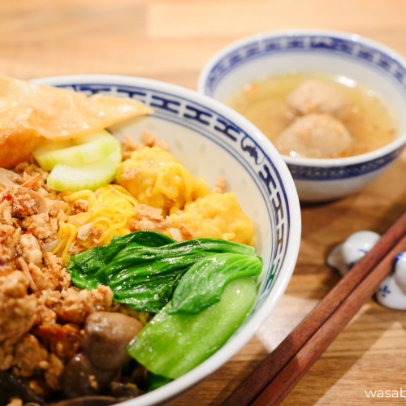

Pangsit Mie Ayam Recipe

Description
What is Pangsit Mie Ayam?
Pangsit means wonton; mie ayam means chicken noodle; and jamur means mushroom.
Thus, you get the idea what this dish is all about. It is one of the perfect examples of Chinese Indonesian cuisine.
Through trading, Chinese people brought along noodle to Indonesia hundreds of years ago.
Since the majority of Indonesians are Moslem, chicken was use instead of pork. The spices and seasoning were also adapted to the local taste.
Nowadays, there is a lot of versions of Indonesian noodle with various styles, ingredients, and meat (pork, beef, prawn – you name it).
But mie ayam is truly the classic. Typically, it comes garnished with a lettuce leaf or blanched greens, dumplings, and a small bowl of broth,
though every vendor and region have their own variation.
Oh, on the table, there will also always be some pickled cucumber (acar timun) and green chilies and/ or sambal!
Ingreidents
- 250 g dried/ fresh egg noodle
- 500 g minced chicken
- 1 can (425 g) canned straw mushroom, drained and quartered
- 2 tbs or to taste light soy sauce, plus more for serving
- 1 tsp dark soy sauce
- 1 tsp white pepper, plus more for serving
- 4 tsp sesame oil
- Water, for boiling noodle
Pangsit Ingreidents
- 100 g minced chicken
- 2 cloves garlic, minced
- 1 green onion, chopped
- 1 tsp sesame oil
- 1 tbs light soy sauce
- 1/4 tsp white pepper
- 14 sheets wonton wrappers
- A small saucer filled with water to seal the wontons later
Steps
-
Mix all the ingredients in a bowl except for the water. Place a wrapper diagonally in front of you, so you see a diamond shape.
-
Put 1 teaspoon of filling in the middle of the wrapper.
-
Brush the corner of the wrapper with tiny bit of water with your fingertips. This is done to help sealing the wonton. So, it acts like a glue.
-
Brush the corner of the wrapper with tiny bit of water with your fingertips. This is done to help sealing the wonton. So, it acts like a glue.
-
If you want to deep fry it, fry it under medium heat for about 2-3 minutes until golden brown.
If you want to boil it, boil it for about 2 -3 minutes until the meat is perfectly cooked.